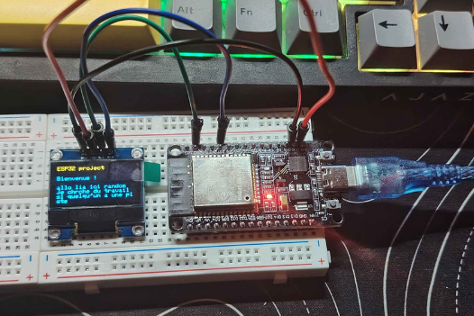

Objets connectés
ESP32
Une carte avec Wi-Fi et Bluetooth.
Breadboard
Ecran 0.96 pouce OLED
ESP32
Jumper wear
Composant de l'appareil
- CPU ESP32 Xtensa LX6 Dual-Core
- Carte mère ESP32 DevKit
- RAM 520 Ko SRAM interne
- Stockage 4 Mo
- Wi-Fi 2,4 GHz 802.11 b/g/n
- Bluetooth BLE 4.2
- Alimentation USB 5 V, régulateur 3,3 V